2026 in 52 albums
The concept's pretty simple. One album per week, not necessarily my favorite album of the week, not necessarily a new album, just one I listened to and liked.
Week 14 (3/29)
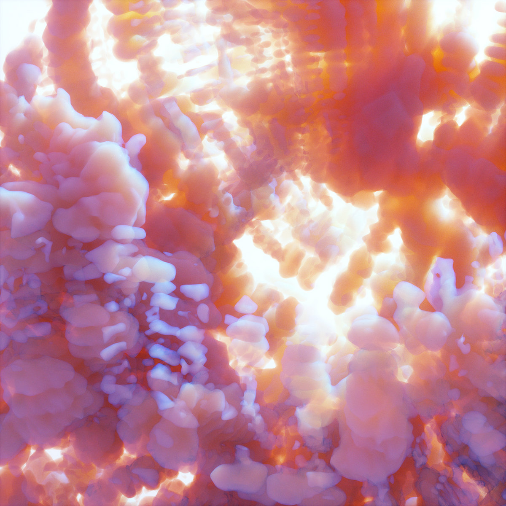
I've never big on house/EDM/IDM/whatever electronic music, but like ambient, every once in a while there's something that holds my interest. lynyn has the academic/experimental flavor of early early James Blake─and that may be my only concrete point of reference so this is all to say it's similar the the only other house/EDM/IDM/whatever I've historically liked.
Week 13 (3/22)
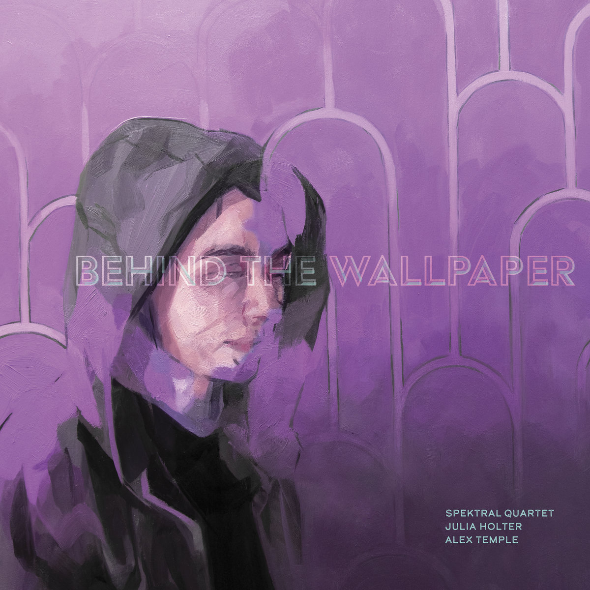
Behind the Wallpaper by the Spektral Quartet, Julia Holter, and Alex Temple
Writing about Julia Holter scares me slightly. Obviously I'm granted a certain distance with this album because Julia Holter is not the composer proper, but it's clear that Alex Temple took notes; Julia Holter fits comfortably in the space carved out by this piece. I'd like to say I'm scared to write about Julia Holter because of the weight of doing justice to her intention and vision. Truth is I'm scared to write about Julia Holter because it requires me to confront the uncomfortable fact that I have only the most passing knowledge of music theory, despite having played music for most of my life (I'm the kind of person who internally scoffs when someone tells me their child is an impressive musician, and then hates himself for it). It seems clear to me that Julia Holter, when she composes and performs music, is "doing something." I get the sense she has a deep knowledge of musical structure and form, leaving her intention simply inaccessible to me; tldr it makes me feel dumb and I'm not a fan of feeling dumb (I glean all this in the same way that I glean a physicist knows physics, which is to say I don't know physics well enough to actually judge their physics-wise acumen, but I generally get the gist being a supposed expert in a sufficiently adjacent field). But, as they say, f*** it.
Alex Temple and Julia Holter work in what I believe is a new dimension of poetry. The melodic dimension of their lyrics feels distinct from song, the phrasing hints at a kind of internal consistency; I can imagine most Julia Holter songs─and every movement of this piece─as stand alone objects; the tonal decisions seem to aim at complementing the language more than the music. Said another way, I feel the melodic dimension is akin to the typographical dimension of concrete poetry, and this dimension─an extension of the lyrics─creates space, what's ultimately a space of play in which the quartet can wander. The underlying accompaniment is light, responsive, full of flourishes, some cinematic, some highly textured, but with a self-consciousness of it's space-filling duty. This gets dangerously close to becoming gloopy, but manages to stave off this criticism (at least from me).
One more thing I cannot help but point out: I've seen several comparisons of this piece to Schönberg's String Quartet No. 2 which, besides feeling like an avant-gardian name-drop/flex, I think is far less applicable then a much more obvious comparison: The Juliet Letters by Elvis Costello and the Brodsky Quartet. The similarities are eerie, to the point that I feel like I'm being gaslit when I cannot find anyone else making this connection.
Week 12 (3/15)
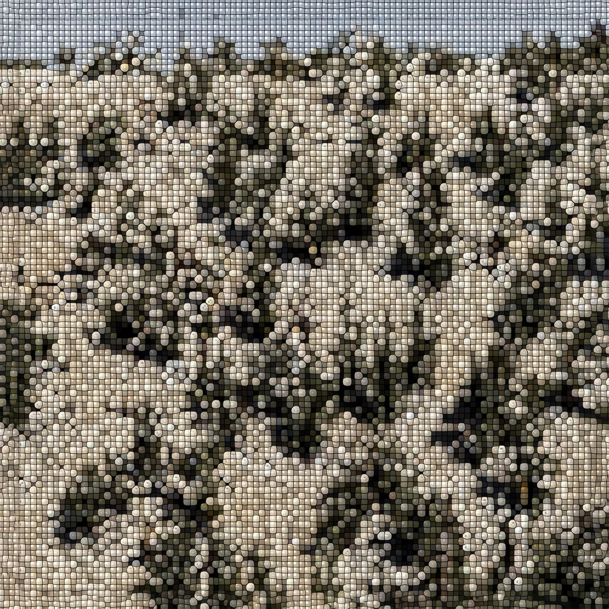
Extra Stars by Gregory Uhlmann
Gregory Uhlmann at it again, in a strange but not unprecedented way. Something like an academic study of blips, bloops, taps, tinkles, thumps, and drones. What more could you want (or say, for that matter)?
Week 11 (3/8)
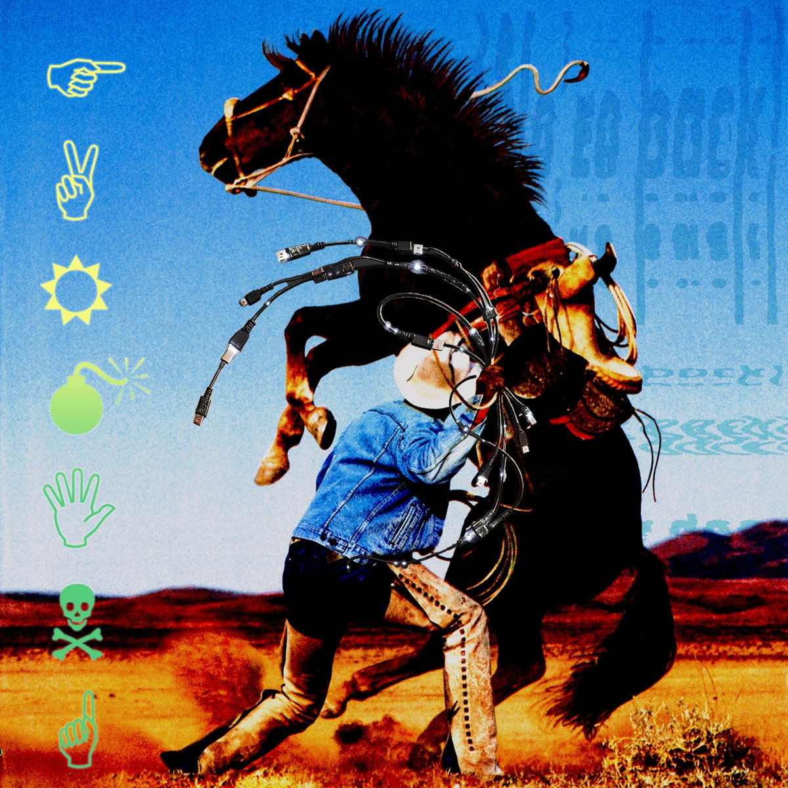
Farming by Ted Hearne & The Crossing
At the risk of offending a group of folks I do not wish to offend (and with the hope of offending a different group just the right amount) I submit the following claim: nunchucks are the dorkiest martial arts weapon (I'm choosing to use the Americanism "nunchucks" instead of the more correct "nunchaku" because I've never in my life actually heard the word "nunchaku" said aloud). This isn't inherent in the form or origin of the implement, rather the product of a near-concerted effort by a species of dorky white male American sinophile. In order to lend myself an iota of authority on the matter (of which, in reality, I have none) I'll mention briefly that I practiced Kung Fu as a "yute", and although I was partial to the humble broadsword (which I have to thank for a souvenir in the form of a 1in scar on my ankle, self-inflicted (accidently) by one such sword of the blunt practice variety) I was also fascinated in that same (teenage-)dorky-sinophile way to the more "exotic" weapons, e.g., the double hook swords of Jet-from-Avatar fame, the double hammers (which also make an appearance in ALTA with a lesser bad-guy side character), the chain whip (whatever you're imagining is probably pretty close), and a personal favorite, worthy of a Google: the horse bench. And although I've already spent too much time on this supposedly brief aside, I can't help but recall a memory of watching a performance of a dual weapon form (think choreographed knife fight) between chain-whip and double hook swords, which felt like the moral equivalent of throwing firecrackers at someone with a weed-whacker.
Self-consciously (bad) Wallacian digression notwithstanding, I further submit a thought experiment: imagine watching a performance of said dorky white male American sinophile using said nunchucks. Furthermore, this is someone who has taken up the practice of martial arts not simply as a kind of socially-recognized affectation, but who has actually studied the art as an art and is actually pretty good. Imagine him manipulating those chained wooden sticks with Bruce-Lee-level grace, but still moving in that somewhat awkwardly stiff way that people who haven't done gymnastics/dance/acrobatics their whole lives naturally do. If the image in your mind is at all similar to mine, you might get the sense of the cringy beauty I'm trying to convey (in my now-very-self-consciously circuitous way).
The thesis: Ted Hearne & The Crossing wield irony like our friend from the though-experiment wields nunchucks. I can't say that Farming is a "good" album, but it has that aforementioned cringy beauty; I can't stop listening even though it makes me tired and a little angry. Sound-wise, it brings to mind Roomful of Teeth's Rough Magic, in which the group seemed to want more "edge", except that Farming takes this concept to it's Weierstrassian extreme, to a veritable lump of nothing-but-edge (where, if you tried to pick it up, you'd be infinitely pin-pricked by its fractalous surface). I imagine an AI agent fed on a steady diet of Reich's speech-melodies, Americana, Fox News, hyperpop, and church-on-TV could hallucinate a solid approximation of this album, but there's something so human and so utterly committed in the combination of heavy-handed social commentary and high production value and the literal human-factor that The Crossing brings. There's a feeling of fighting fire with howitzers, a recognition of futility alongside a real sense that they are trying to say something. And sometimes they seemingly do, other times they emphatically do not. Regardless, it leaves the mind reeling, is this what it takes to get me out of my individualist-consumerist stupor and actually do something? Probably not, but I did ask myself the question.
Week 10 (3/1)
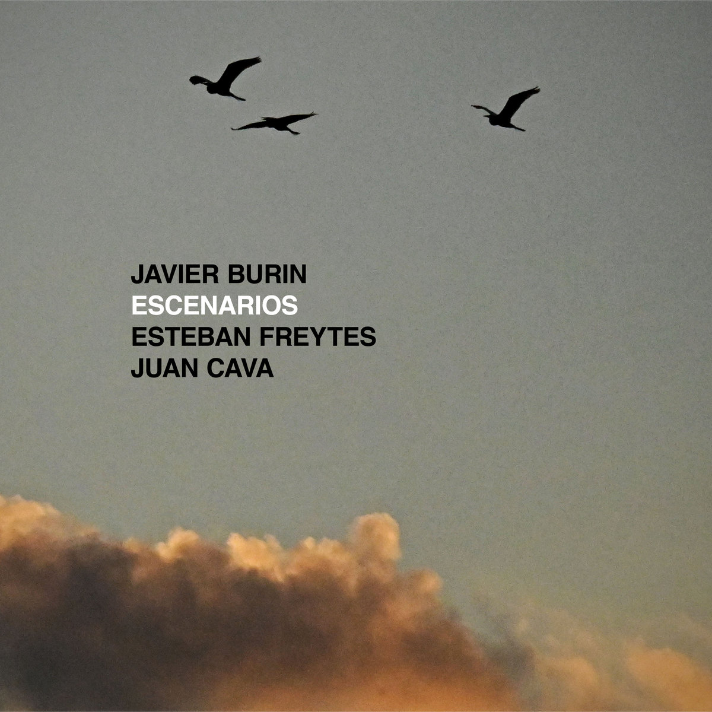
I've been on the fence about this one for a while now. I thought I'd make it this week's album so I could figure out if I actually like it. Final analysis: I do. This one made me work for it; at first it just barely registered under the din of the currently-crowded post-bebop/modern chamber jazz soundscape. I think what ultimately did it for me was the solo in the second track "PF" which plays like a slightly unhinged Bach. It also took me several listens to realize just how full-bodied the tracks are. The first couple listen-throughs I guess I thought some tracks were multiple; several of them are past the 7m mark and often the thread, though strong, weaves haphazardously through a number of different stylistic groundings (no apologies for mixing metaphors). One gets the feeling when listening to these folks (if my experience is not wholly solipsistic) of being in the presence of some wicked talent (I'm a Bostonian now), talent that is achingly vying for attention. This doesn't mean it's contentious──sometimes the easiest way to get someone's attention is with the help of some other attention-getters──but it lacks that cool I'm-so-good-I-could-give-my-buddy-the-spotlight-and-you-still-couldn't-help-noticing-me character of some of my absolute favorite jazz albums (people who've known me long enough and have talked music with me will know that my such-as example is Ben Wendel's Understory: Live at the Village Vanguard). One consequence: the album is sprinkled with "gimmicks" several of which are used by the greats but are gimmicks none the less: (1) the bass-follow-piano riffs that give a satisfying almost hip-hop cadence (2) the hidden-rhythm syncopation of one voice followed by the another which sets the beat (like Vijay Iyer's "Accelerando" or Dirty Projectors' "The Socialites"). But in my view the real kicker is that Javier Burin is freakin' 25 (22 on recording this album), and I'm very much looking forward to whatever's next.
Week 9 (2/22)
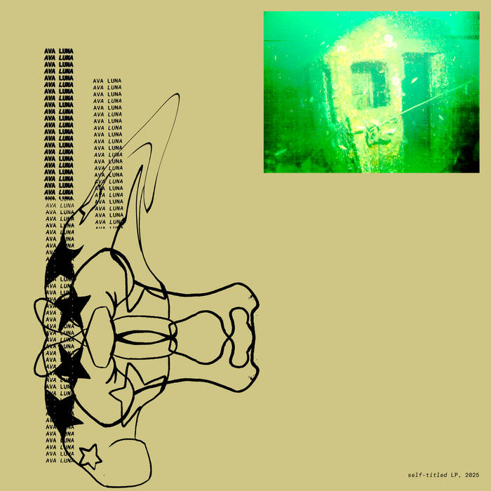
Ava Luna is era-defining for me (which essentially means I listened to them in college). Electric Balloon felt like a revelation (though I would later learn it was basically a revival of no-wave in the style of James Chance and the Contortions). I remember being floored by "Billz", the first single off Infinite House, with its oscillations between crushing wall of noise and chill groove; urgent and virtuosic, driven by the truly important questions: "who's gonna pay my bills?" (also, gotta say, "Steve Polyester" is one of the best non-Pynchon Pynchon characters out there). I was lukewarm on Moon 2, I enjoyed it primarily in a second-order way, but it felt like it wasn't meant for me (maybe for someone with stronger ties to Devo and Talking Heads). I was bummed to hear in 2019 that we weren't gonna get any more Ava Luna, but Carlos Hernandez and Felicia Douglass continued to make music so it didn't feel over over (On Folly seemed very much a continuation of the Ava Luna storyline). Last week, getting a sudden urge to listen back to Moon 2 (maybe this time I'd "get it") I learned that Ava Luna came out with an album last year (!). On first listen I was, disappointed. It has none of the pent-up energy, the deep-cutting angst, less I-need-to-say-this-let-me-speak and more getting-older-and-throwing-up-the-hands. The album is a distillation of everything that makes Ava Luna unequaled composers and musicians, but I see parallels with the last Dirty Projectors project Songs of the Earth, in which composition becomes the sole vehicle for expression. Despite this, I listened through again, and then again, and again, and then it clicked: it's a damn fun album. That I think is the thread through everything they do. They're a group of super talented folks, getting together yet again to make music, building on their years-worth of experiences, and the product is, simply put, beautiful. The banter at the end of "My Walk" makes me smile every time I listen to it.
Week 8 (2/15)
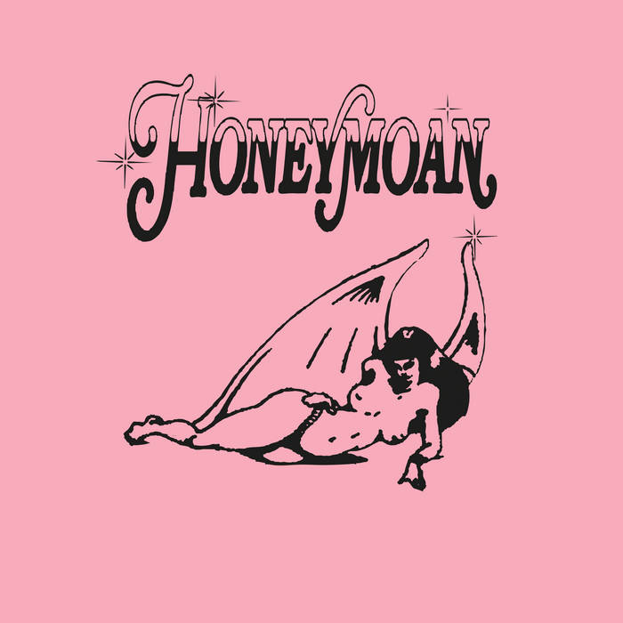
Sometimes I feel like I'm getting too old for ironic depresso-mean-girl synth-pop-punk bullshit (also thinking of Dev Lemons here) but, yeah, catharsis to the max, cathart all the way home to this turned up loud in my little impreza.
Week 7 (2/8)
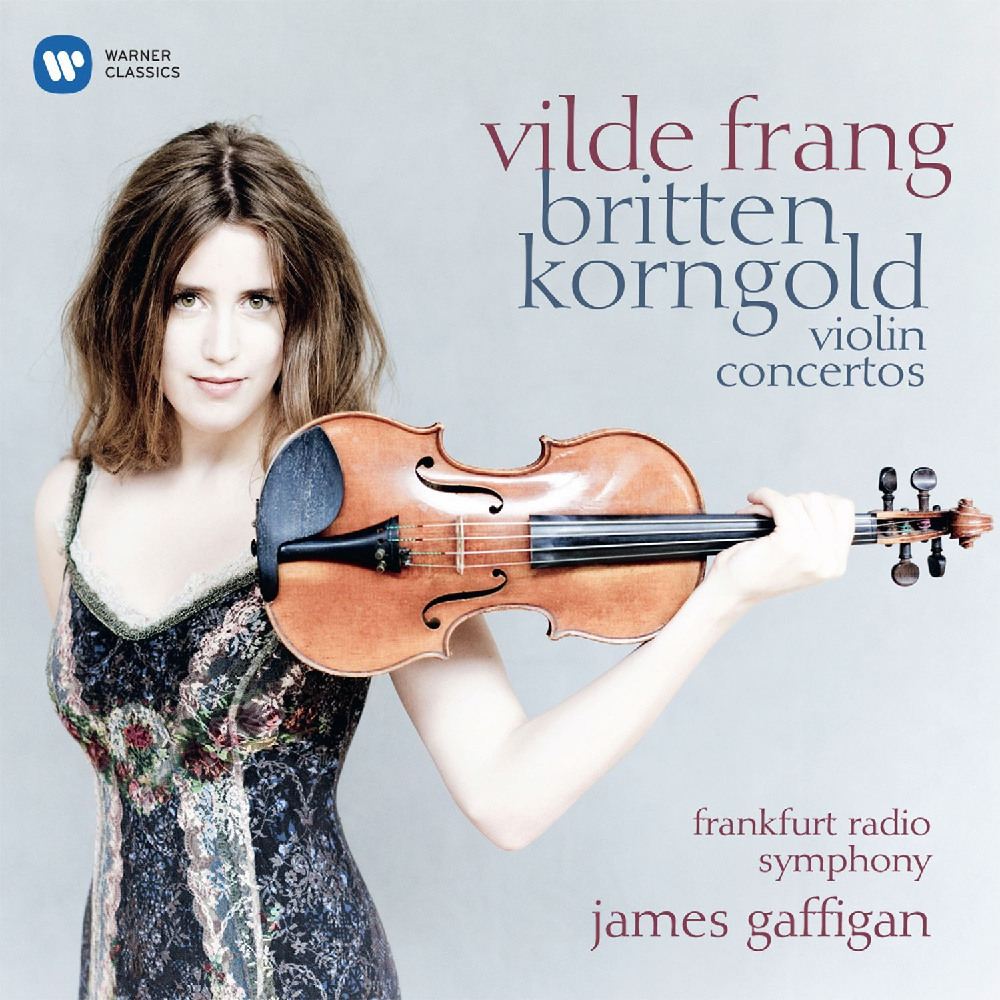
This week I watched the BU Symphony Orchestra's first concert of the year, whose program included a performance by Juan Shin──the CFA 2025 concerto competition winner──of the Korngold Violin Concerto. And, though hyperbolic, maybe with a touch of romanticism that parrots the piece itself, I'd say this felt like a once in a lifetime experience. Juan's playing was technically exquisite, graceful and easy, yet charged. The performance felt like a gift, especially with the intimacy of the setting: a small audience in a university auditorium on a Friday night (and, jeez, what a stunning dress). It was the kind of performances that makes me want to "pay it forward", to make sure I too am giving in any way I can. I chose this album simply as a token (also the Britten is an all time favorite of mine).
Week 6 (2/1)
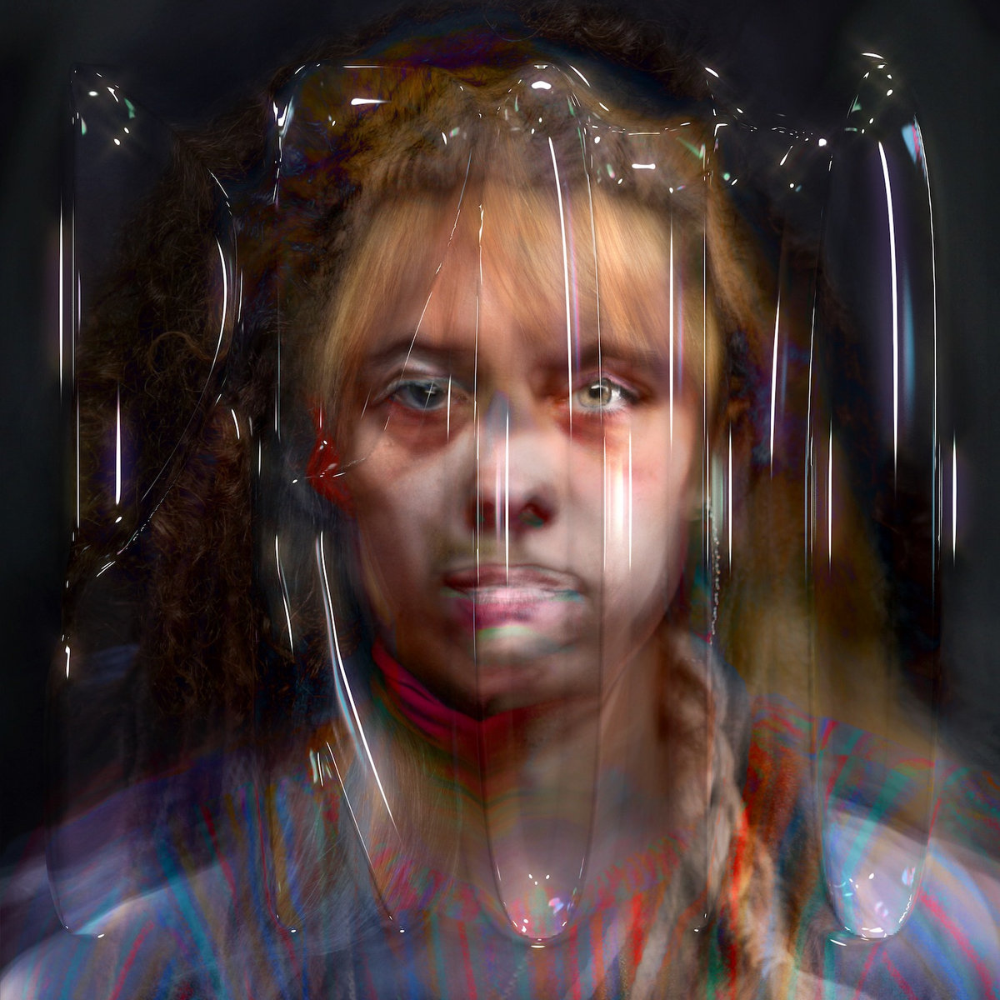
With all that's going on in the AI-sphere, this 2019 AI-music experiment feels almost quiant. It's a marked departure from Herndon's previous albums; when listening to Movement, one has the feeling that every synth began life as a sine wave and was molded to fit its aural purpose, wrestled into submission and imbued with a sense of the primordial. In PROTO, Herndon takes the voice as the starting point, and uses AI to aid the molding, a more powerful tool for a less giving medium. This is done to great effect, but I believe falls into the trap of many early-AI projects: AI is used in the way that reverb is used in recording, it creates "aura" but muddles personality (compare Casals and Ma on the cello suites). The AI of it all pushes Herndon towards "the middle", welcoming more than usual (not unflattering) comparisons──I get flavors of Oneohtrix Point Never, Caroline Shaw, Julia Holter, Purity Ring, and it's hard not to think of Imogen Heap, at least for folks listening to music in the aughts. Taken as an experiment (as I think it's intended) PROTO is ground-breaking, and I can't think of anyone I'd rather address the AI-music problem.
Week 5 (1/25)
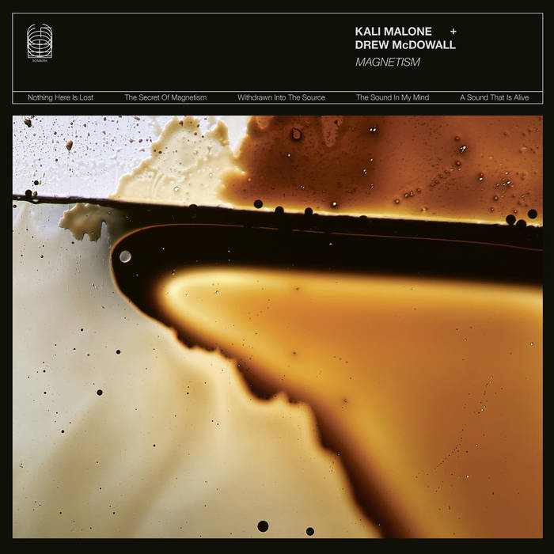
Magnetism by the Kali Malone + Drew McDowall
Ambient can sometimes be inscrutable (at least for me) but occasionally you get lucky with the context in which you first hear a piece of ambient. I was in a weird place in my life, staring out at a pond on a cool fall day while my car was getting serviced. The emergent overtones and relentlessly compressed bass drones of the synthesizer just worked for this scene and headspace.
Week 4 (1/18)
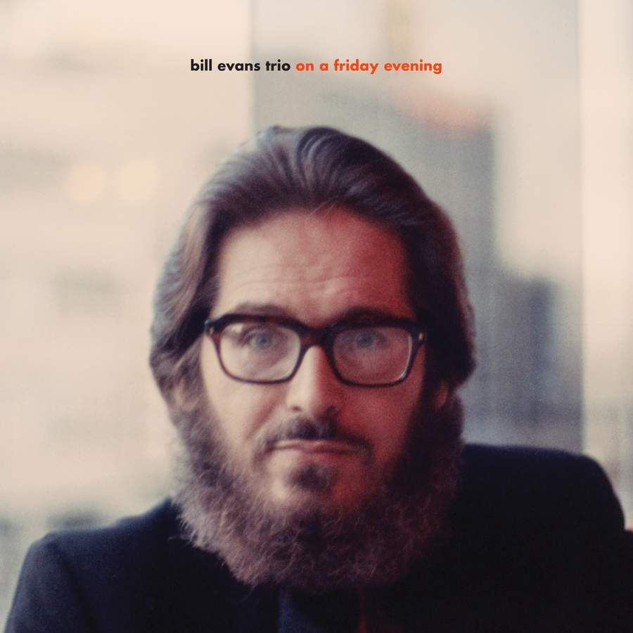
On A Friday Evening by the Bill Evans Trio
Every so often, I need to listen to Evans. And after week one of the spring semester, I needed something with quiet strength. Evans for me straddles the Burkian beauty-sublime divide, the decisions he makes with regard to phrasing seem written in the clouds. I also kinda love Eddie Gomez's buzzy bass in this recording, it brings out the lightness and occasional humor of it all.
Week 3 (1/11)
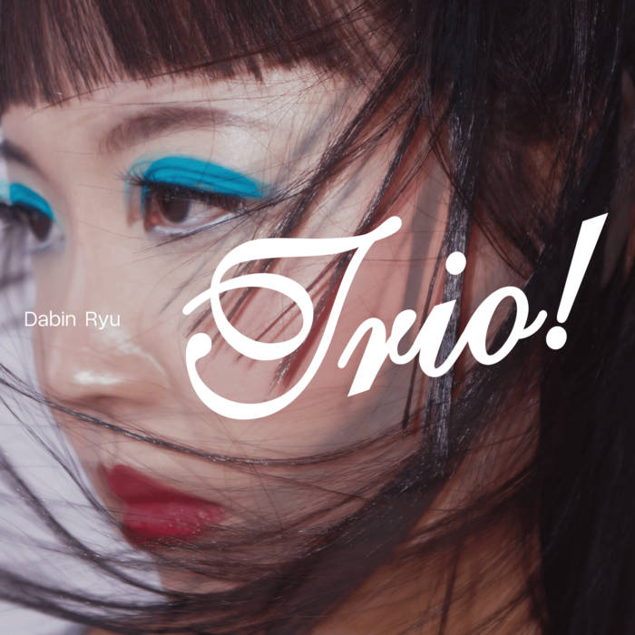
Dabin Ryu has classical-pianist-energy. The opener "Vertigo" has Ólafsson precision (sub Bach for post-bop) and the intro of "In the Land of Oo-Bla-Dee" plays like a Prokofiev piano sonata. Also goes without saying, Joe Martin (bass) and Johnathan Blake (drums) hold their own, and have plenty of their own shining moments.
Week 2 (1/4)
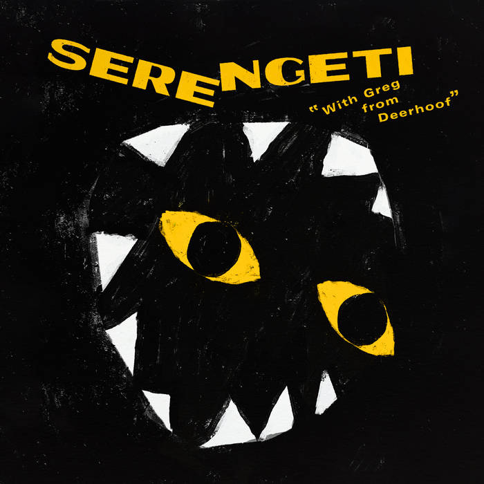
With Greg from Deerhoof by Serengeti
An unexpected but natural collaboration, the 17 minute ad-hoc live session "I Got Your Password" is unreal. This album has been on my listening queue for years, but I think aptly captures 2026's off-the-bat absurdities.
Week 1 (1/1)
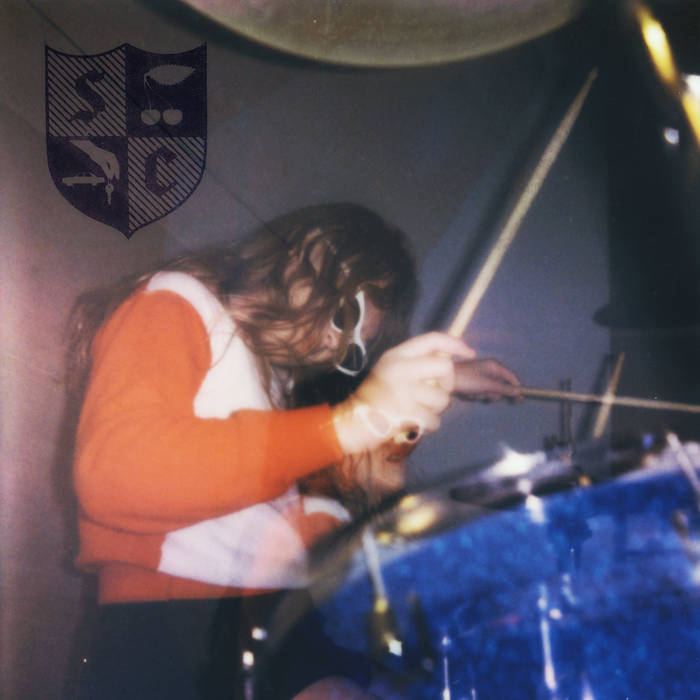
Unapologetically catchy, produced enough to not feel like a demo tape, but not so much that it has the sometimes-cloying polish of recent Waxahatchee (full disclosure, I have a sweet tooth). "Angel Wings" is the first ear-worm in a while I've enjoyed having.